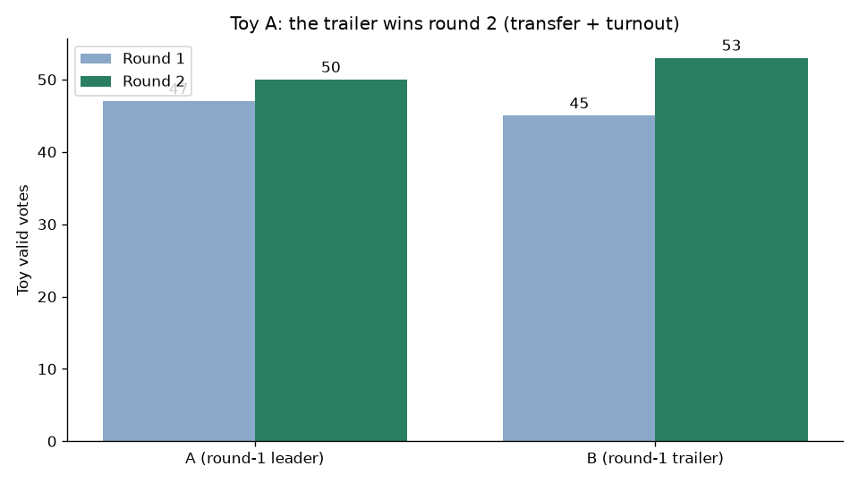
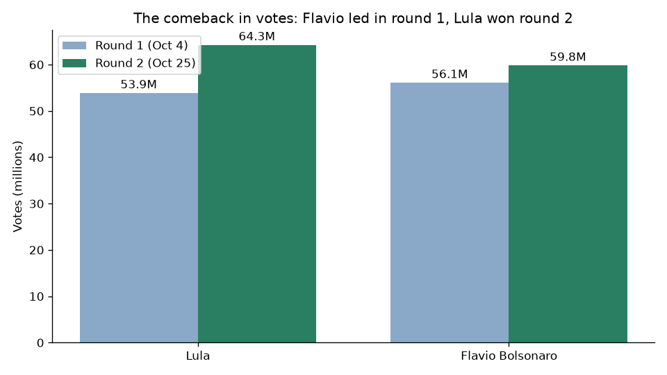
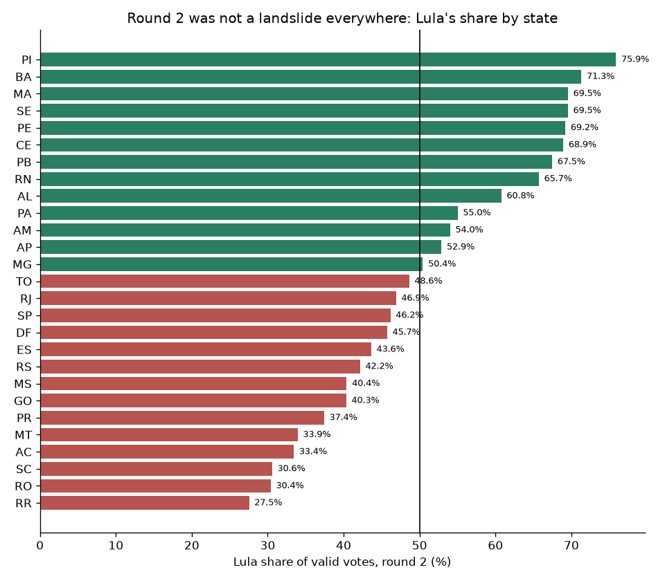
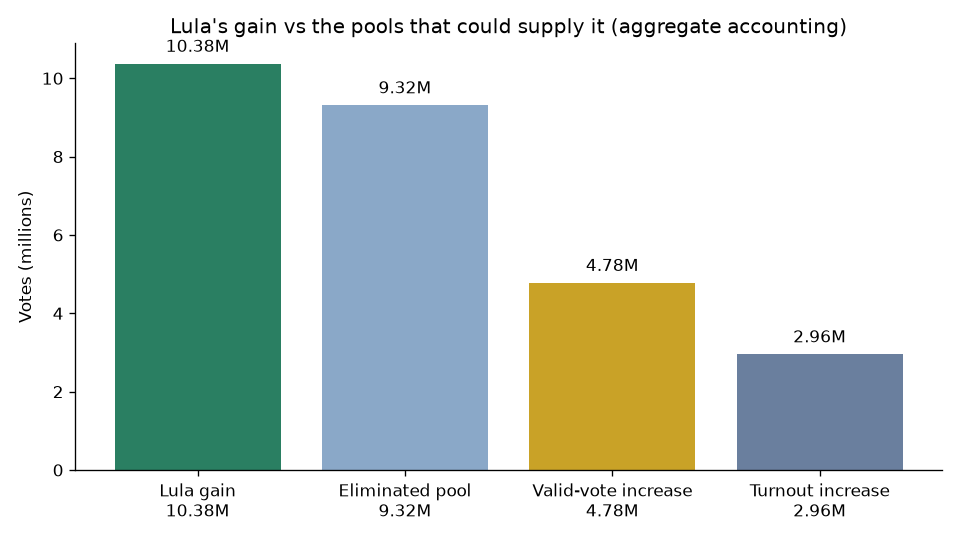
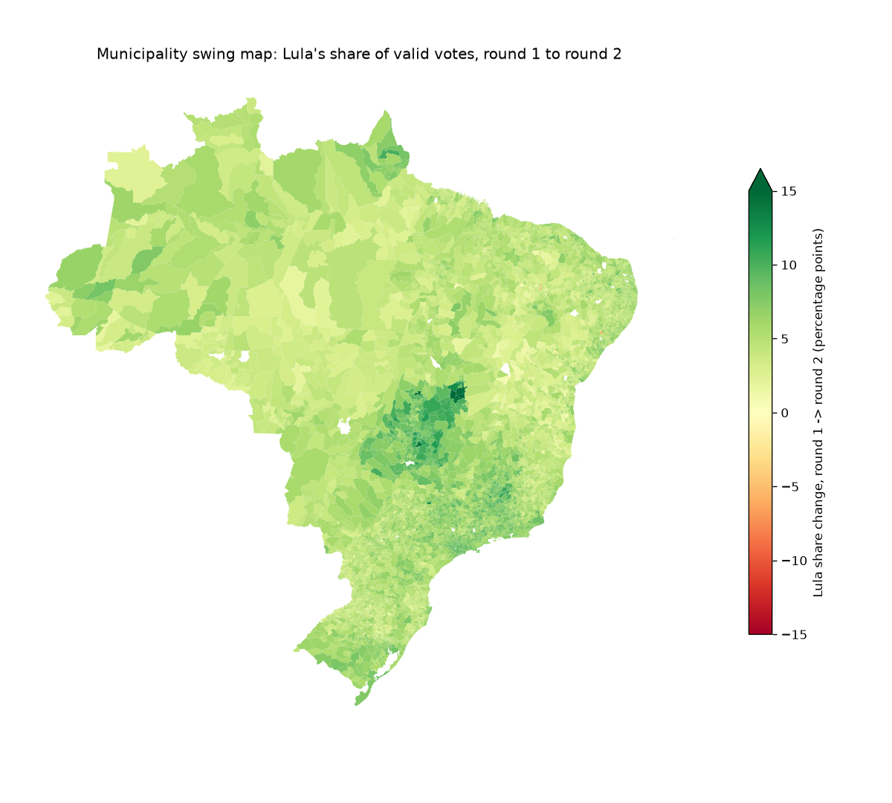
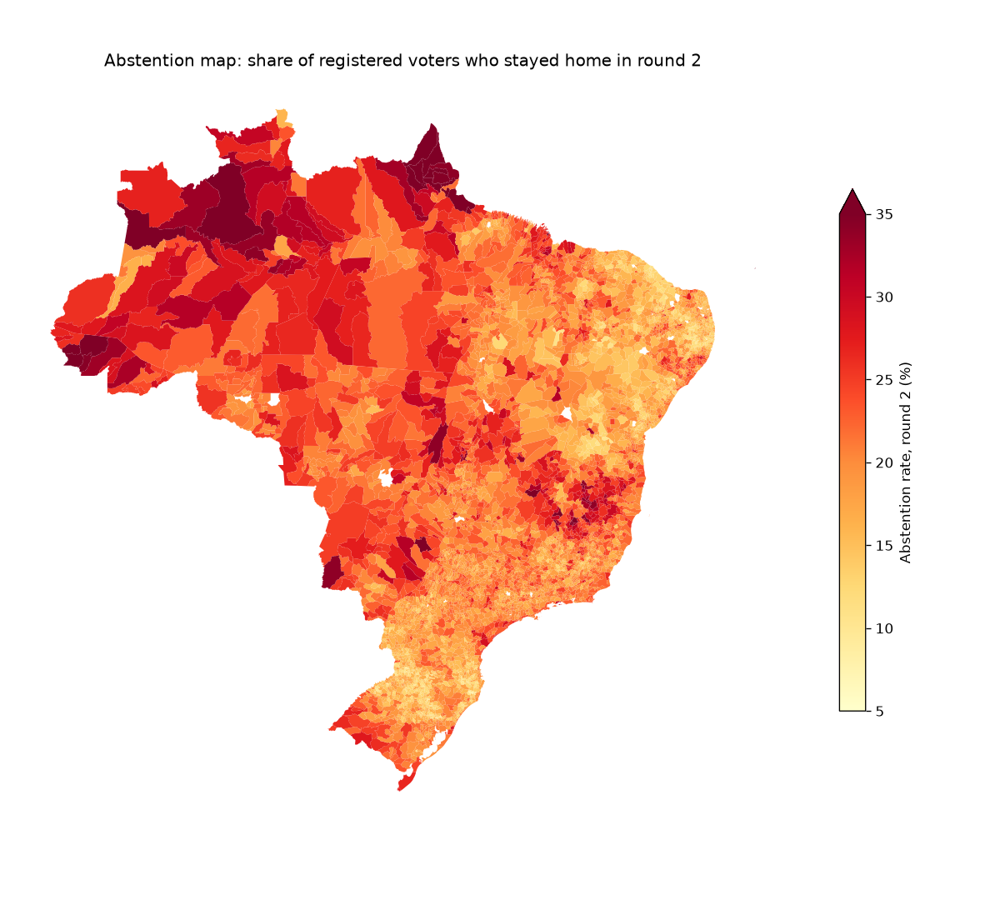
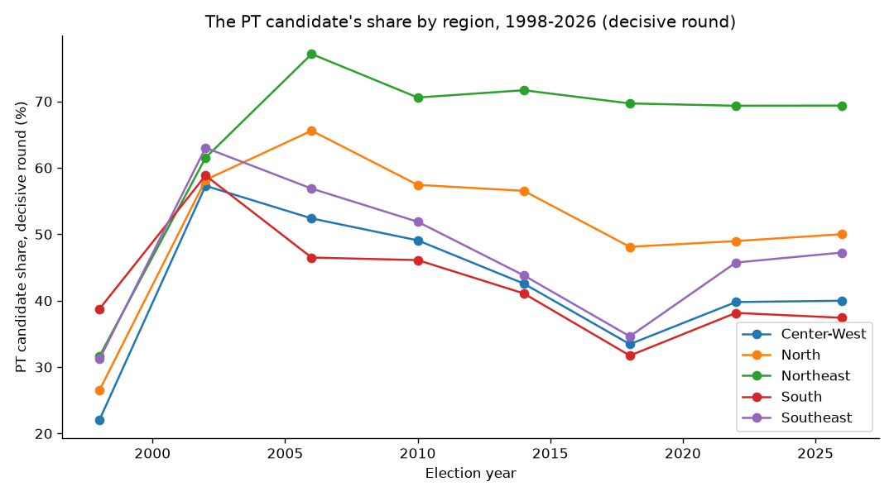
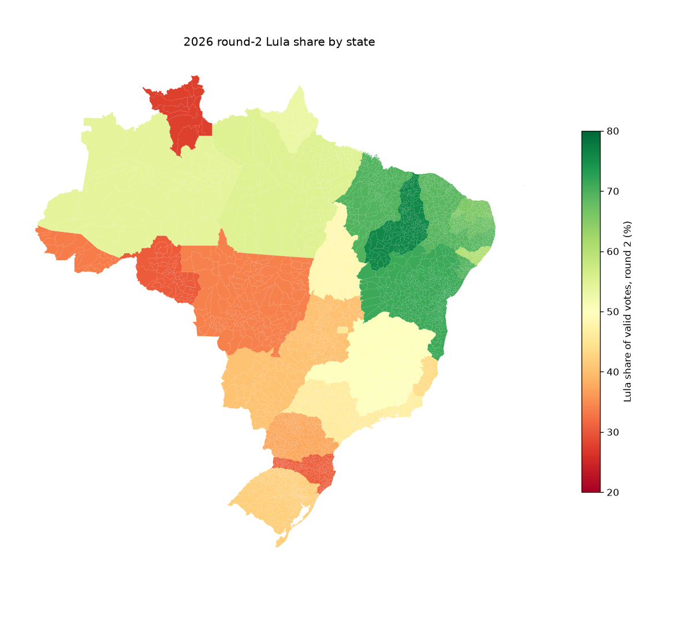
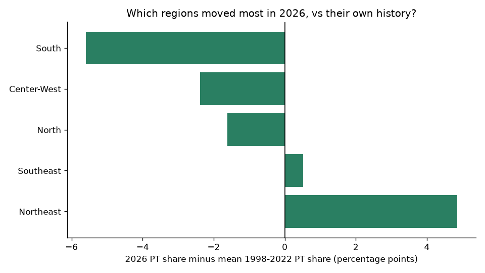
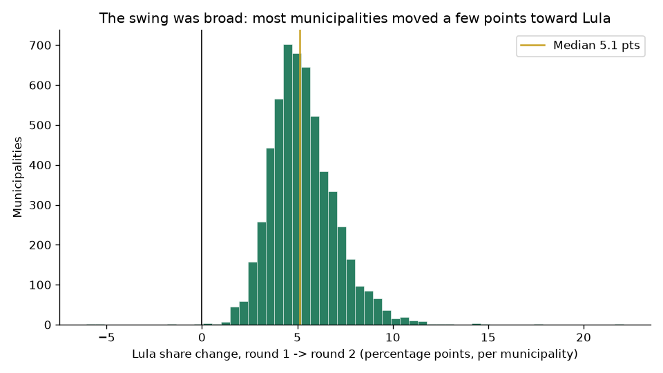

Flávio Bolsonaro led the first round. Lula won the runoff. That had never happened before in Brazil's post-1989 democracy, and it did not require inventing a single vote to explain.
About the dispute, up front. Flávio Bolsonaro refused to concede, alleged fraud over a judge's last-minute order extending voting by two hours in certain regions, pledged annulment, then fled to Miami on October 28 after a passport-surrender order. The electoral court (TSE), foreign governments, and his own party accepted the result. The TSE count is the source of truth here. The contestation is labelled wherever results are shown, never hidden, and never treated, by itself, as proof of fraud or proof of cleanliness.
View the code on GitHub How to run it See the interactive dashboard
Brazil votes in two rounds: if nobody passes 50% of valid votes in round 1, the top two go again. That is the whole secret of a comeback. In round 2, millions of voters have to choose again, including everyone who voted for an eliminated candidate, and everyone who stayed home the first time. With a toy example of 100 voters, this project shows how transfer plus turnout alone can flip a result, with zero fraud involved.

The toy: same voters, second choice, different winner.
October 4, round 1: Flávio Bolsonaro 47.03%, Lula 45.16%, Flávio ahead by about 2 million votes. October 25, round 2: Lula 51.79% (64,256,232 votes), Flávio 48.21% (59,826,041), a margin of 4,430,191. Turnout 80.78%, abstention 19.22%. At 81, Lula won a fourth term, and became the first candidate since 1989 to finish second in round 1 and win the runoff.

Round 1 vs round 2: the flip, in one chart.

The runoff map, state by state.
Lula gained +10,376,694 votes between rounds; Flávio gained +3,721,538. Together: +14,098,232. That total is exactly covered by two pools: eliminated candidates' round-1 votes (9,316,747) plus the valid-vote increase (+4,781,485, from higher turnout and fewer blank/null votes). The comeback adds up, in aggregate.
But eliminated votes alone cannot explain it: Lula's gain is 111.4% of the entire eliminated pool, so at least 1,059,947 votes must have come from new voters, round-1 blank/null voters choosing a candidate, or Flávio switchers. Aggregate data cannot split that remainder, and this project does not pretend to. One more honesty note: if transfer and new voters had split like the round-2 result itself, Lula would have gained only ~7.30 million. He gained 10.38 million, so transfer and new voters leaned Lula more than average.
And it was broad: Lula gained votes in 98.6% of municipalities (5,491 of 5,571); the median municipality swung +5.13 points.

The decomposition: where 10.4 million votes can, and cannot, come from.

Every municipality, round 1 to round 2: the swing is nearly everywhere, not in a few places.

Abstention fell almost everywhere in round 2, millions more showed up.
The Northeast remains the PT's strongest region (69.37% in 2026) and the furthest above its own 1998–2022 mean (+4.86 points). The South is the weakest (37.42%, −5.60 vs its mean). The Southeast rose most versus 2022 (+1.51 points, to 47.24%); the North reached 50.01%; the Center-West was flat (39.99%). Only 2 states flipped between 2022 and 2026: Amapá to the PT, Tocantins away from it.

Each region against its own history, the Northeast above it, the South below it.

2026 by state.

2026 compared with each region's own historical average.
| What was tested | Result |
|---|---|
| Was the gain broad across municipalities and regions? | Yes, most municipalities, all five regions |
| Was the gain arithmetically possible from eliminated votes + new valid votes? | Yes, the pools cover the gains exactly |
| Was the gain concentrated in a few big places? | No dramatic concentration, top 100 municipalities: 45.2% of gains vs 38.7% of electorate |
| Did gains track where turnout rose? | Only weakly, correlations 0.05 and 0.08 |
| Did extended-hours regions behave differently? | Cannot be tested from these files, TSE files contain no voting-hours field, so no such comparison is presented |
What this does and does not prove. The comeback adds up, happened almost everywhere rather than in a few places, and looks like what happens when millions of voters have to choose again and millions more show up. But vote totals alone cannot prove an election was clean, and they cannot prove fraud either. Both over-claims go beyond what municipality totals can say, and this project makes neither.

Breadth: gains in 98.6% of municipalities.
2022 Census demographic overlays (income, race, education) were cut, IBGE's data APIs were unreachable from the build machine and no key-free bulk mirror was found. The extended-hours comparison was cut, not faked, the field does not exist in TSE files. The regional series starts in 1998 because the TSE municipality series starts there (the national runoff-history table still covers 1989–2026). Everything cut is documented in BUILD_REPORT.md.